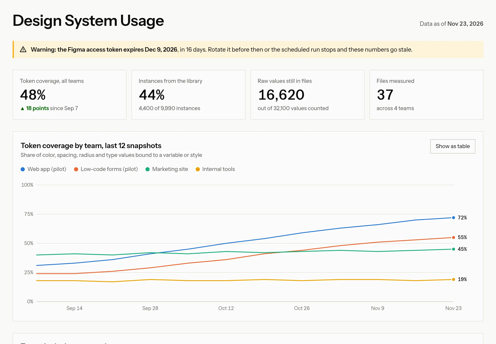
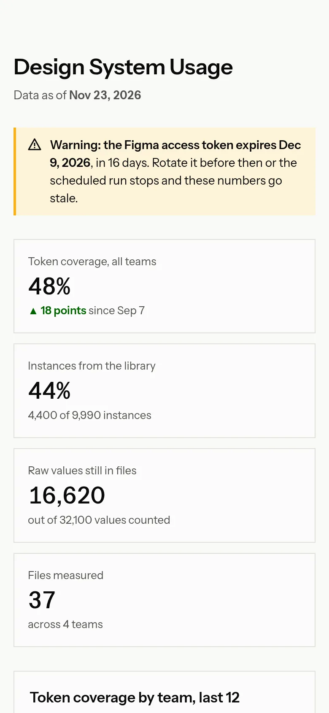
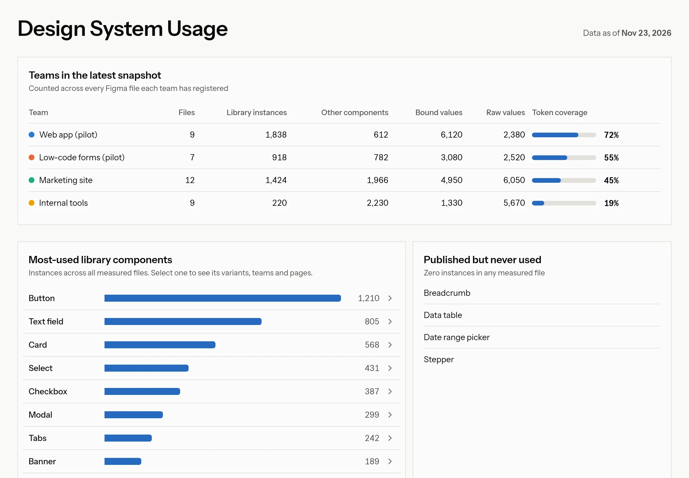
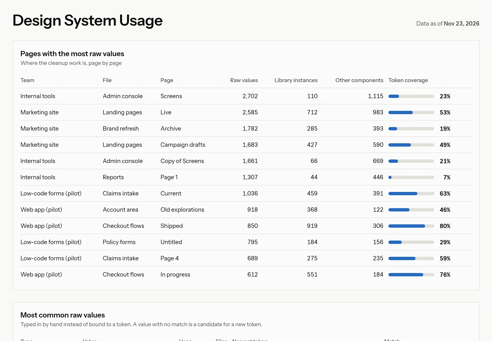
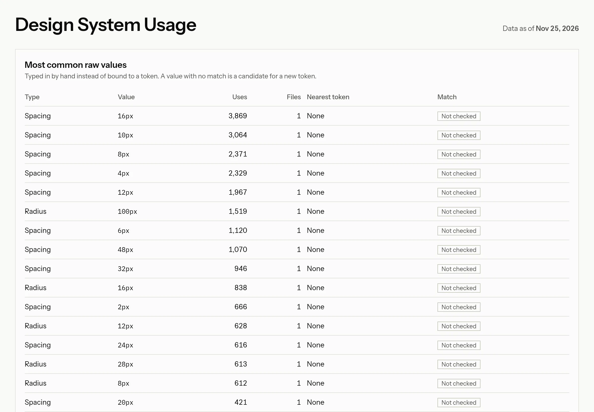
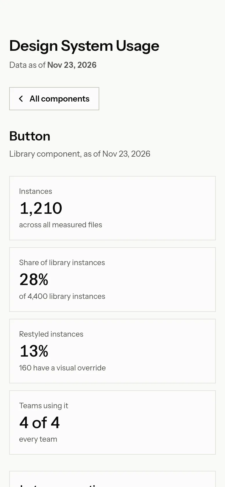

For design system teams who use Figma
Every morning, see how much of your Figma work really uses your design system
Design System Usage reads your teams’ Figma files every night and publishes one page with the answer: how many values are bound to tokens, how many components come from your library, and which typed-in values to fix first. It runs on GitHub, so there is no server to keep. Free and open source.


What it measures
Four numbers, counted in the files themselves
Figma’s library analytics counts insertions and detachments. It can’t tell you how many hex codes and pixel values people typed in by hand, or where they are. Design System Usage opens the files and counts.
- Token coverage
- How much is bound to a tokenThe share of color, spacing, radius and type values bound to a Figma variable or style, per team and over time.
- Library share
- How much comes from the libraryComponent instances from your published library, against local copies and other libraries.
- Raw values
- What to fix firstEvery typed-in value, ranked by use, with the nearest token and whether it matches exactly.
- Unused components
- What nobody usesComponents you published that no measured file has a single instance of.


A real file
We ran it on Google’s Material 3 Design Kit
We copied the public Material 3 Design Kit from Figma Community into a free Figma account and ran one collection. It read 30 pages in 32 seconds.
The most common raw value was 16px of spacing, typed in 3,869 times. The next four were spacing too. The kit has variables for color, type scale, font and shape, and none for spacing, so there was nothing to bind them to. That is the kind of gap the dashboard is built to show.

How it works
Runs on GitHub. Nothing to host.
- Create a Figma access token with read access to file content and library content, and add it to the repository as the secret
FIGMA_TOKEN. - List your files in
dashboard.config.json: the library file, and each team’s files. - Every night at 06:00 UTC, a GitHub Action reads the files and commits a snapshot to the repository.
- GitHub Pages publishes the dashboard. Send the link to anyone who asks how adoption is going.
- Your designs stay in Figma. Snapshots keep counts, component names and raw values such as
#1A4B8C, never frames, text or images. - Paced for Figma’s rate limits. In a scale test, five large files with 18,960 instances took 78 requests: about eight minutes at 10 requests a minute.
- Warns before the token runs out. A banner shows the days left and turns yellow three weeks before.
- On Figma Enterprise? Import a Library Analytics export for weekly history of insertions, detachments and token use.
- No dependencies to install. Plain Node.js and one HTML page, under the MIT license.
